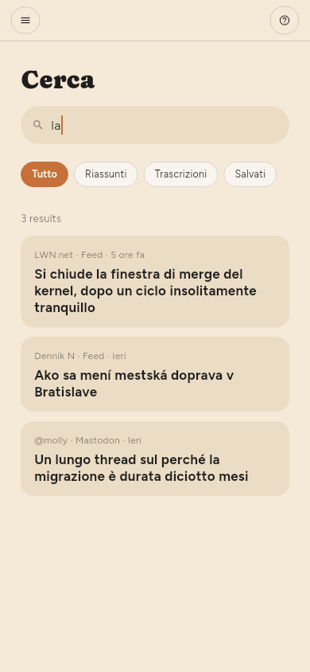
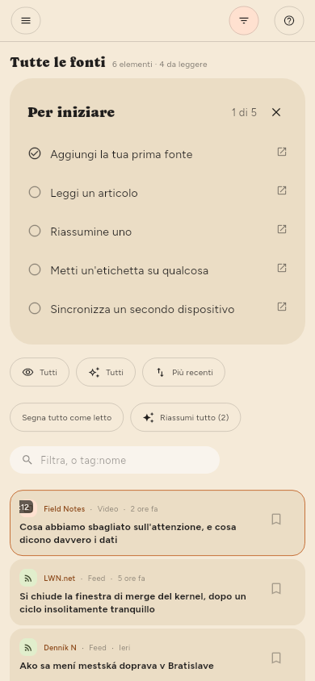

← Riassunti · Indice · Conservare le cose →
Trovare le cose
Cerca nello scaffale, oppure /.
La ricerca copre i titoli, il testo degli articoli e le trascrizioni dei video. Un risultato in una trascrizione è un momento: indica l’ora e porta lì quando lo apri.

La casella di testo nel pannello dei filtri è un’altra cosa: restringe l’elenco che hai davanti invece di aprire risultati propri. Cerca nel titolo, nel nome della fonte e nel riassunto; Cerca legge anche il testo degli articoli e le trascrizioni.

Ogni filtro interroga l’intera libreria, non la parte che vedi sullo schermo. Una parola, un’etichetta, Da leggere, Non riassunti, un feed, un tipo: ciascuno riceve risposta dall’archivio, quindi il numero sopra l’elenco è il numero di elementi che esistono. tag:linux trova tutto ciò che porta quell’etichetta, per quanto vecchio sia; due etichette restringono invece di allargare, e un valore con uno spazio va tra virgolette: tag:"machine learning".
Etichette (solo Premium)
Le etichette di un articolo sono gli argomenti che il riassunto ha individuato, e puoi cambiarle: i chip sotto il titolo nel lettore aggiungono e tolgono, e un clic su uno mostra tutto ciò che lo porta.
Anche una fonte può avere etichette, nel suo pannello; e un articolo viene filtrato in base alle etichette della sua fonte oltre che alle proprie, quindi etichettare un feed organizza i cento articoli che contiene già e non solo quelli che arriveranno.
Ogni etichetta in uso è elencata sotto Etichette nello scaffale, con quanto contiene. Un clic su una restringe l’elenco; un secondo clic lo ripristina.